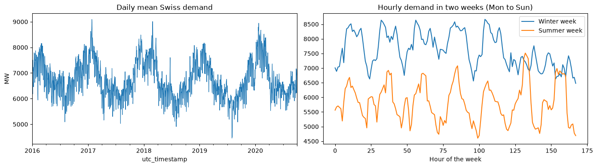
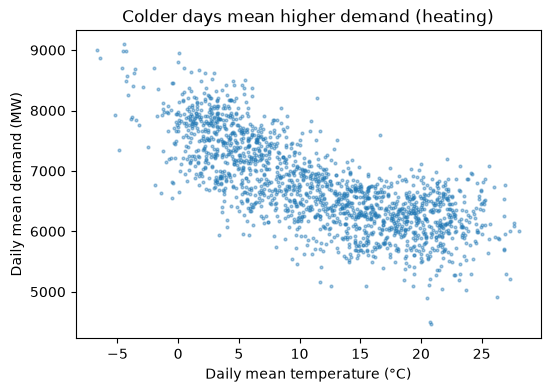
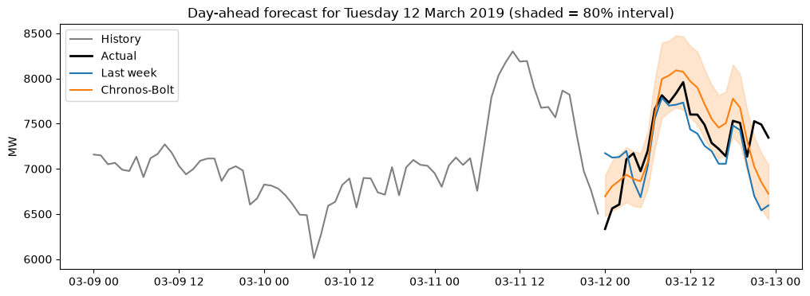
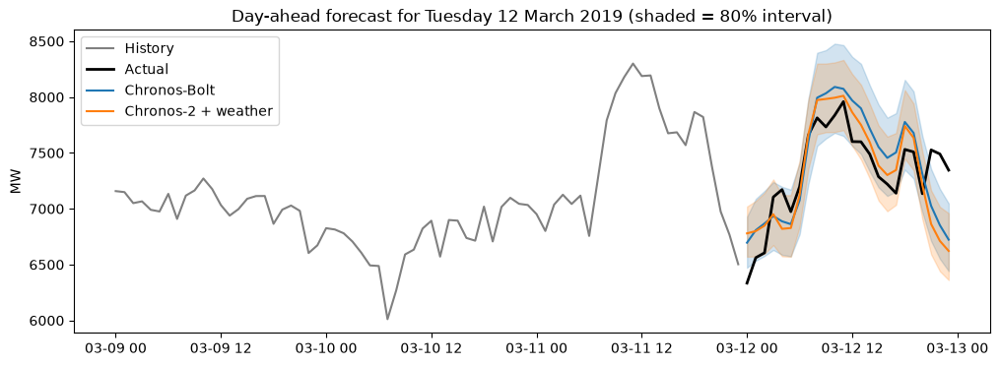
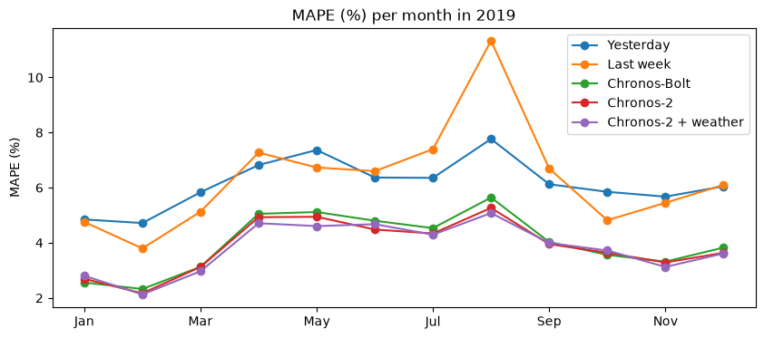
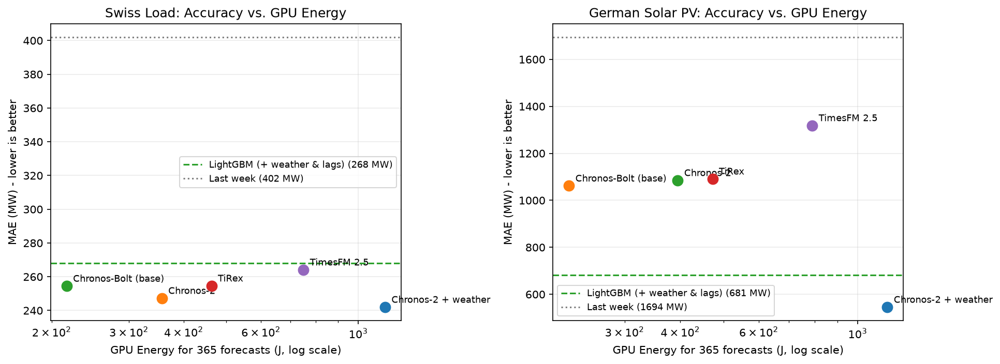

Module 1 · Time-series foundation models
Forecast tomorrow's electricity demand with a model that has never seen it
We forecast Swiss national electricity demand one day ahead, for every day of 2019, using two pretrained models from Amazon's open-source Chronos family. We never train them on Swiss data. Then we check whether giving them the weather helps.
- Energy question
- Day-ahead national load
- Models
- Chronos-Bolt, Chronos-2
- Data
- OPSD / ENTSO-E load, Open-Meteo
- Runtime (GPU)
- ≈ 45 s, cached
Four words you need
A time-series FM was pretrained on a huge, mixed collection of series (energy, traffic, weather, retail, …). You give it the recent history of a new series and it continues the series. Four terms describe how:
| Term | In this module | Energy-modelling analogy |
|---|---|---|
| Context | The last 2,048 hours of demand (≈ 12 weeks) | The history window of your regression |
| Horizon | The next 24 hours | Day-ahead market gate closure |
| Quantiles | 10%, 50%, 90% forecasts: a median plus an 80% interval | Scenario band for reserve sizing or stochastic optimisation |
| Covariates | Temperature and solar radiation, past and future | Exogenous drivers (degree days, irradiance) |
Chronos-Bolt (≈ 200 M parameters) only sees the demand history (univariate). Chronos-2 (≈ 120 M parameters) can also read covariates.
Look at the data first
The data is hourly Swiss load from Open Power System Data (2016–2020, originally ENTSO-E), plus temperature and radiation averaged over five Swiss cities from the Open-Meteo archive. Everything is kept in UTC to avoid daylight-saving gaps. Before forecasting, check that the patterns a model should learn are really there:


Baselines: the bar to beat
We simulate 365 forecasts: at midnight UTC of each day of 2019, forecast the next 24 hours. A foundation model is only worth its 1 GB of weights if it beats forecasts anyone can make in one line:
# "Tomorrow = today" and "tomorrow = same weekday last week"
forecasts["Yesterday"] = np.stack([window(y, pos[o] - 24, 24) for o in origins])
forecasts["Last week"] = np.stack([window(y, pos[o] - 168, 24) for o in origins])Zero-shot forecasting in five lines
contexts is a plain NumPy array of shape (365 days × 2,048 hours). All 365 forecasts are made in one batched call,
which takes about 1.5 seconds on a GPU:
from chronos import BaseChronosPipeline
bolt = BaseChronosPipeline.from_pretrained("amazon/chronos-bolt-base", device_map="cuda")
q, _ = bolt.predict_quantiles(
torch.tensor(contexts, dtype=torch.float32), # (365, 2048) demand history
prediction_length=24,
quantile_levels=[0.1, 0.5, 0.9],
)
median = q[..., 1] # (365, 24) point forecastNothing in this code knows about Switzerland, holidays, heating or the ENTSO-E data format. The model recognised the daily and weekly cycles in the context and continued them. That is the whole idea of zero-shot.

Adding weather with Chronos-2
Chronos-2 takes a long-format table (one row per hour, an id column per forecast) and an optional table of
known future inputs. Covariates are simply extra columns:
from chronos import Chronos2Pipeline
chronos2 = Chronos2Pipeline.from_pretrained("amazon/chronos-2", device_map="cuda")
pred = chronos2.predict_df(
context_df, # id, timestamp, load_mw, temperature, radiation (history)
future_df=future_df, # id, timestamp, temperature, radiation (next 24 h)
id_column="id", timestamp_column="timestamp", target="load_mw",
prediction_length=24, quantile_levels=[0.1, 0.5, 0.9],
)For the future 24 hours we feed the measured weather, as if the weather forecast were perfect. In operation you would use a numerical weather forecast, so the real gain from weather is somewhat smaller than shown here. Always say which weather you used when you report results.

A full year of results
One good-looking day proves little. Scored over all 365 forecast days of 2019:
| Model | MAE (MW) | MAPE (%) | Peak-5% MAE (MW) | Ramp MAE (MW/h) | 80% coverage | Winkler (MW) |
|---|---|---|---|---|---|---|
| Last week (baseline) | 401.9 | 6.4 | 328.1 | 168.4 | – | – |
| Yesterday (baseline) | 395.0 | 6.2 | 386.2 | 174.9 | – | – |
| Chronos-Bolt (base) | 254.5 | 4.0 | 171.9 | 131.2 | 78.5% | 1,208.6 |
| Chronos-2 | 247.3 | 3.9 | 185.7 | 125.7 | 77.4% | 1,157.8 |
| Chronos-2 + weather | 242.0 | 3.8 | 170.5 | 126.7 | 76.6% | 1,147.7 |
- Both FMs cut the error by about 35–40% compared with the best naive baseline, with zero training, and cut peak-hour and ramp errors substantially.
- Weather matters most at the peak. Overall MAPE moves only slightly (3.9 → 3.8%), but Peak-5% MAE drops from 185.7 MW to 170.5 MW. For day-ahead national load, the last 12 weeks already carry most of the signal; for a heat-pump-dominated district or PV feeder, expect a larger weather effect.
- Coverage is close to 80%, slightly below. The intervals are usable, and Winkler score confirms Chronos-2 + weather gives the best calibrated uncertainty.

Multi-architecture benchmark: Load vs. Solar PV
How does Chronos compare with other foundation-model families (Google TimesFM 2.5, NX-AI TiRex xLSTM) and strong trained ML baselines (Ridge, LightGBM with lags and weather)? In 02_tsfm_benchmark_energy.ipynb we score all eight approaches across 365 days of 2019 on two contrasting regimes: Swiss load and German solar PV.
| Model | Load MAE (MW) | Load CRPS (MW) | Solar MAE (MW) | Solar nMAE | Peak VRAM (GB) | Load GPU Energy |
|---|---|---|---|---|---|---|
| Last week (baseline) | 401.9 | – | 1,694.0 | 35.4% | – | – |
| Ridge (+ weather & lags) | 303.4 | – | 781.6 | 16.3% | – | – |
| LightGBM (+ weather & lags) | 268.0 | 183.8 | 681.1 | 14.2% | – | – |
| TimesFM 2.5 (200M) | 264.1 | 170.6 | 1,318.6 | 27.6% | 2.53 | 749.9 J |
| TiRex (35M xLSTM) | 254.6 | 164.0 | 1,091.5 | 22.8% | 0.30 | 462.7 J |
| Chronos-Bolt (base) | 254.5 | 165.4 | 1,061.6 | 22.2% | 4.92 | 216.3 J |
| Chronos-2 (univariate) | 247.3 | 159.6 | 1,085.0 | 22.7% | 2.29 | 356.6 J |
| Chronos-2 + weather | 242.0 | 157.2 | 545.5 | 11.4% | 2.31 | 1,150.7 J |

Operational footprint, precision & energy cost
Every notebook instruments model size, peak GPU memory, latency and GPU power draw (50 ms NVML polling) alongside an offline CodeCarbon whole-notebook system estimate. Measured on an NVIDIA Quadro RTX 6000 (24 GB, Turing SM 7.5):
| Model | Params (M) | Disk (MB) | Peak VRAM (GB) | Min Hardware | 365-day Latency | mJ / day | Licence |
|---|---|---|---|---|---|---|---|
| Chronos-Bolt (base, fp32) | 205.3 | 821.2 | 4.92 | GPU <= 8 GB | 1.36 s (3.7 ms/day) | 587.3 | Apache-2.0 |
| Chronos-2 (demand only) | 119.5 | 477.9 | 2.29 | GPU <= 4 GB | 2.13 s (5.8 ms/day) | 943.4 | Apache-2.0 |
| Chronos-2 + weather | 119.5 | 477.9 | 2.31 | GPU <= 4 GB | 5.31 s (14.5 ms/day) | 3,211.2 | Apache-2.0 |
Precision trade-off: fp32 vs. bf16 vs. fp16
Running Chronos-Bolt (base) across all 365 days of 2019 in different floating-point formats:
| Precision | MAE (MW) | MAPE (%) | Peak VRAM (GB) | Time (s) | Avg Power (W) | GPU Energy (J) | mJ / day |
|---|---|---|---|---|---|---|---|
fp32 | 254.5 | 4.00 | 4.92 | 1.07 | 183.9 | 197.6 | 541.4 |
bf16 | 254.4 | 4.00 | 2.76 | 1.85 | 178.2 | 329.7 | 903.3 |
fp16 | 254.5 | 4.00 | 2.59 | 0.87 | 89.9 | 80.3 | 219.9 |
On Turing (Quadro RTX 6000, SM 7.5), fp16 runs on native Tensor Cores and cuts peak VRAM by 47% and GPU energy by 2.5×
with identical accuracy, while bf16 is slower because SM 7.5 emulates it. On Ampere and newer GPUs (SM 8.0+), bf16 is native and avoids fp16 overflow risk.
Energy and CO₂e summary
| Scope | Duration (s) | GPU (Wh) | CPU + RAM (Wh, modeled) | Total (Wh) | CO₂ CH 30 g/kWh (mg) | CO₂ EU 230 g/kWh (mg) | CO₂ US 380 g/kWh (mg) |
|---|---|---|---|---|---|---|---|
| Profiled steps (GPU only, NVML 50 ms) | 16.2 | 0.711 | – | 0.711 | 21.3 | 163.6 | 270.3 |
| Whole notebook (CodeCarbon offline) | 34.8 | 0.879 | 1.388 | 2.267 | 68.0 | 521.4 | 861.4 |
What this means for your model
- Quick, strong forecasts for many series. If you need demand inputs for hundreds of substations or buildings, a zero-shot FM gives you a strong first forecast for all of them without fitting hundreds of models.
- Quantiles for scenario generation. The 10–90% band is a direct input for stochastic or robust optimisation, but check its coverage first, as done here.
- Know the failure modes. Holidays, structural breaks (COVID-19 in spring 2020, new large loads) and anything not visible in the context.
Try next
- Change
CONTEXTto 168 or 512 hours. How much history does the model really need? - Forecast 48 or 168 hours instead of 24.
- Add a public-holiday flag as an extra covariate for Chronos-2 and look at August and Christmas again.
- Run the same
contextsarray through another time-series FM, for example Google's TimesFM.